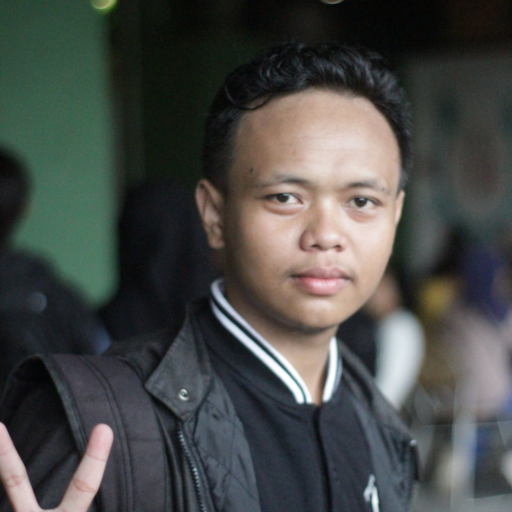

Mario Saputra
Web Desaigner
Beranda
Tentang Saya
Portofolio
Kontak
🎓
Pendidikan
Sarjana Teknik Informatika - Universitas Kuningan (2023 - Sekarang )
SMA Negeri 1 Cigugur - Jurusan IPA (2020 - 2023)
SMP Negeri 7 Kuningan - Tahun 2017 - 2020
💼
Pekerjaan
Web Developer di PT Indome (2023- Sekarang)
Junior Programmer di Start-Up (2021-2022)
Freelance Frontend Developer (2019-2020)
👥
Organisasi
Ketua Himpunan Mahasiswa Teknik Informatika (2024-2025)
Anggota Komunitas Developer React Indoesia (2023-Sekarang)
Volunteer di Gerakan Pemuda Digital (2022)
📖
Pendidikan Nonformal
Bootcamp Fullstack Developer - Rung Guru (2021)
Pelatihan UI/UX Design - Lembaga BUMN (2020)
Workshop Machine Learning - Universitas UI (2022)